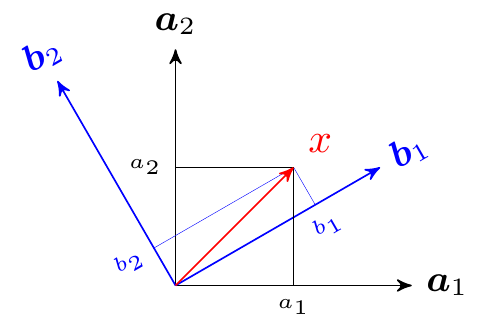
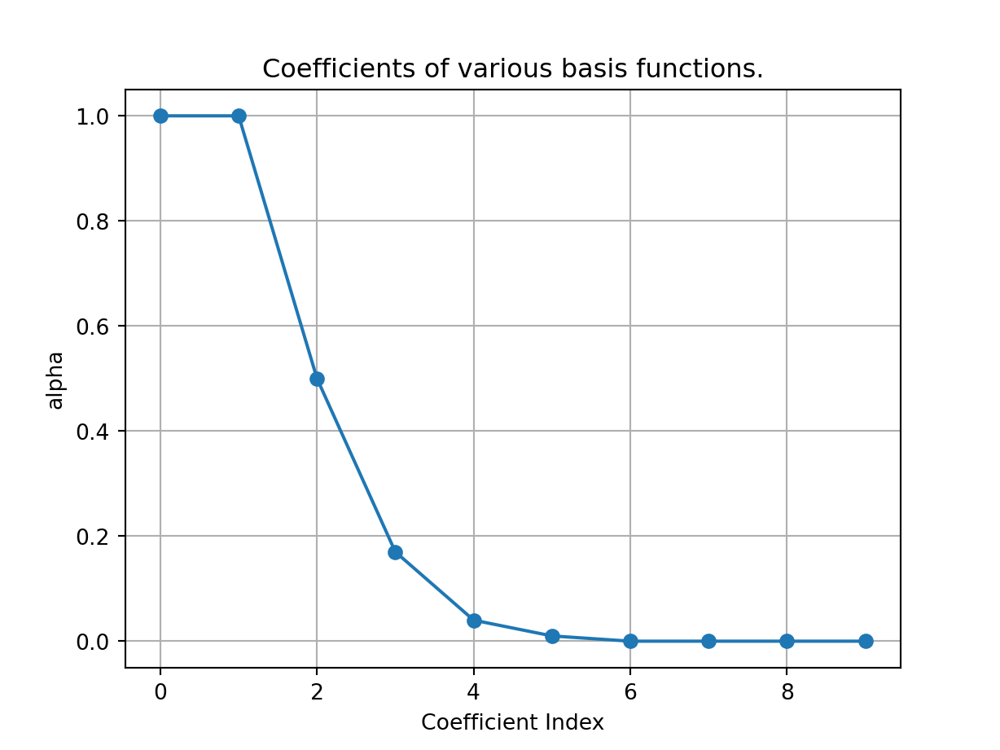
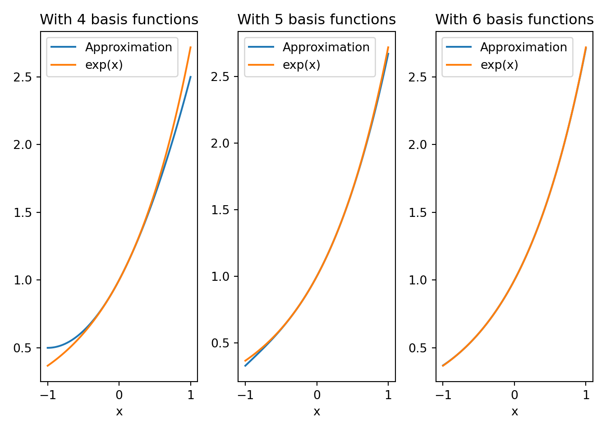
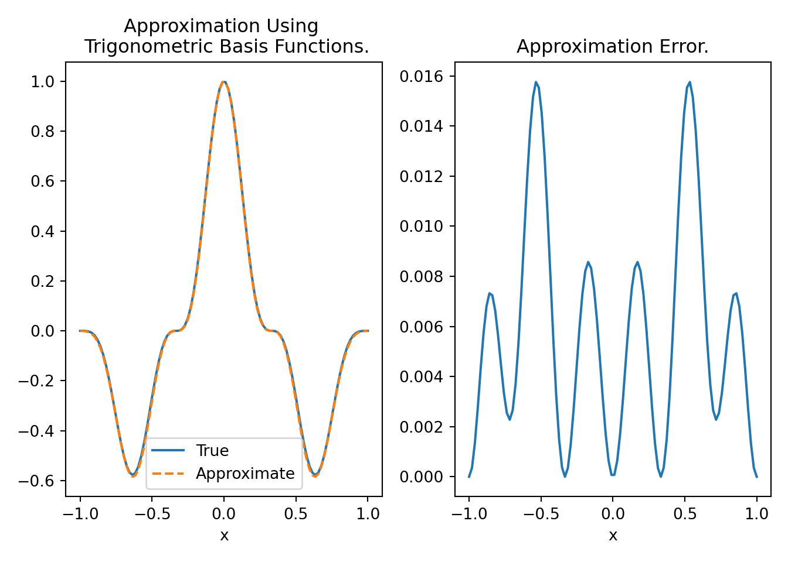
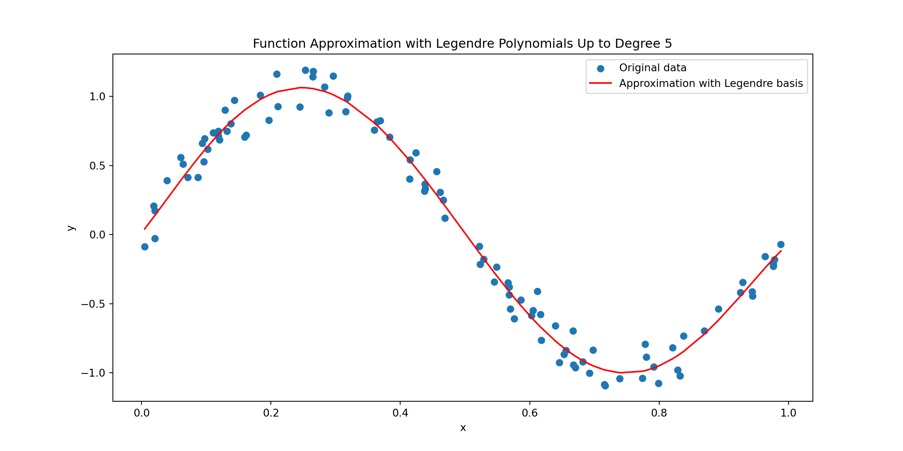
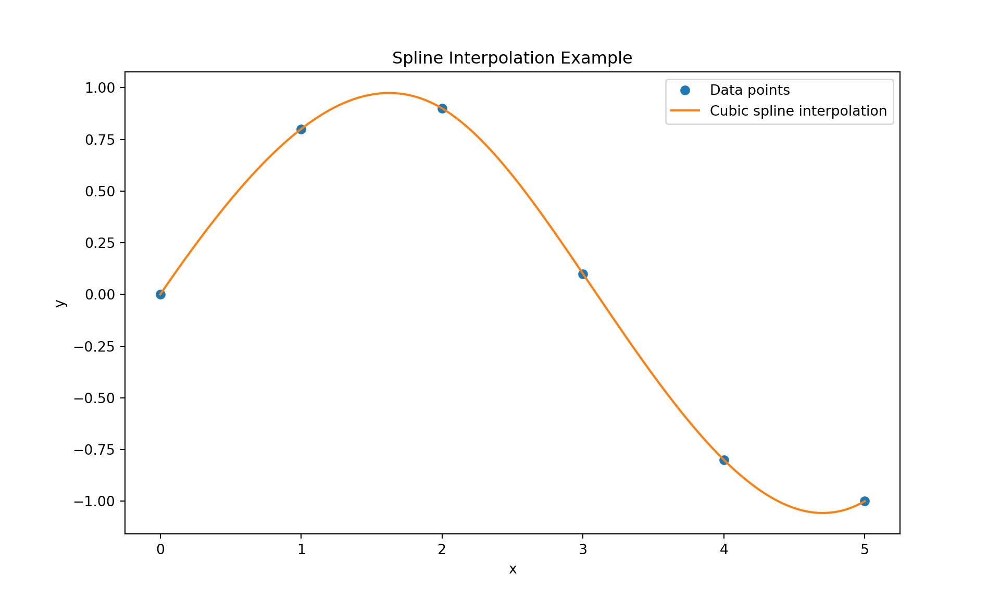
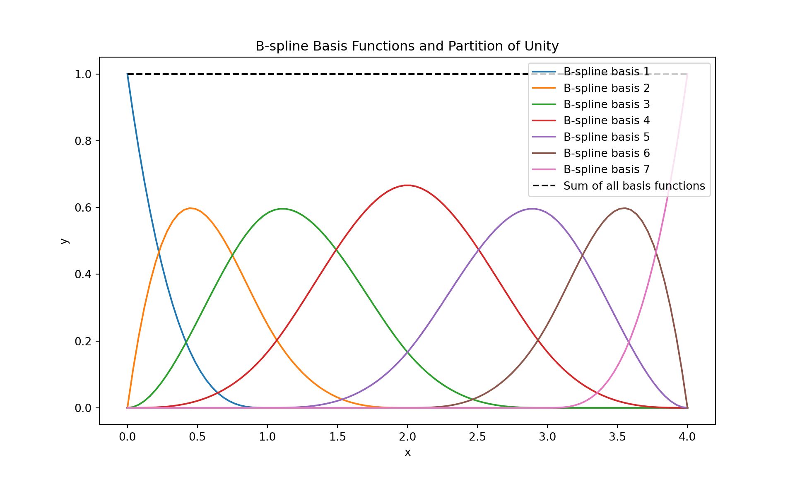
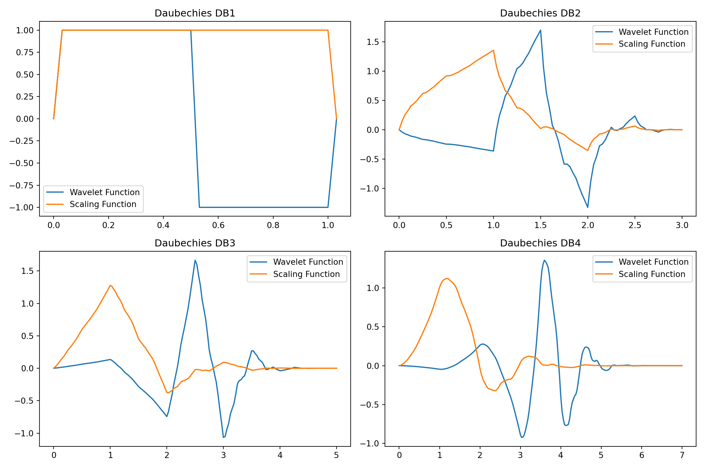
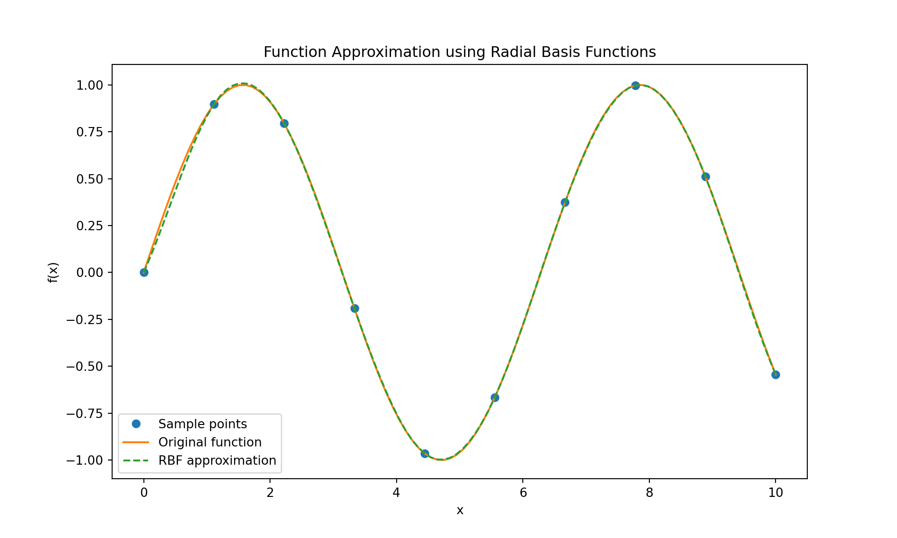
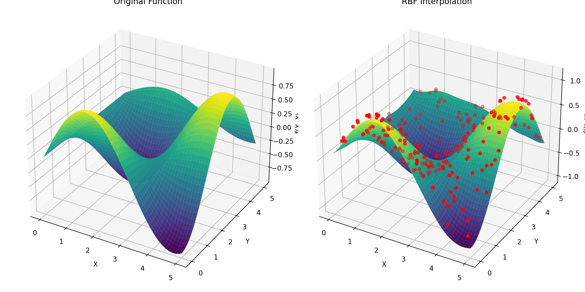

9 Function Approximation
Function approximation is a core concept in mathematics, statistics, and machine learning, involving the estimation of a function using a simpler or more tractable form. This process is essential when the exact form of a function is unknown, too complex, or when an analytical expression is not available.
Key aspects of function approximation include:
Simplifying Complex Functions: Function approximation involves representing a complicated function with a simpler one, which is easier to analyze, compute, or understand. The approximating function typically belongs to a well-defined class of functions, like polynomials, trigonometric functions, or piecewise linear functions.
Polynomial Approximation: One common approach is using polynomial functions, such as in Taylor series or Fourier series approximations. For example, a complex function can be approximated by a polynomial of a certain degree, capturing the essential behavior of the function within a specific range.
Piecewise Approximation: Another method is to approximate a function using a series of simple functions over different intervals. For instance, a complex curve could be approximated by a series of straight lines (linear functions) in different segments.
Least Squares and Regression: In statistics and machine learning, regression techniques, such as linear regression or polynomial regression, are used to approximate the relationship between variables. The least squares method is often used to find the best-fit line or curve that minimizes the differences (residuals) between the observed values and the values predicted by the model.
Neural Networks: In modern machine learning, neural networks, particularly deep learning models, are powerful tools for function approximation. They can model complex, non-linear relationships in data, effectively approximating functions with many variables. We will learn about neural networks later in the book.
Function approximation is an effective strategy for addressing real-world challenges where direct calculation or analysis is difficult. It facilitates the extraction of vital insights from intricate phenomena and plays a pivotal role in various domains, including engineering, economics, physics, and artificial intelligence. The selection of the approximation technique and the level of approximation rely on the specific needs for accuracy and computational efficiency.
9.1 Linear Spaces with Basis Elements
This chapter emphasizes function approximation through a linear combination of known functions, creating a linear approximation space. In this realm, the notions of “basis” and “basis functions” are essential. A basis in a linear approximation space consists of a set of basis elements (vectors or functions) that are linearly independent and encompass the entire space. This implies that any vector or function in this space can be represented as a linear combination of these basis elements.
These basis vectors or functions need to be linearly independent, ensuring that none of them can be expressed as a linear combination of the others. This guarantees the minimality of the basis, meaning that there are no superfluous elements. Additionally, this implies that the basis elements are orthogonal.
The collection of basis vectors or functions must cover the entire space, signifying that any element within the space can be precisely depicted using a linear combination of the basis components.
Some important linear approximation spaces are discussed next.
9.2 Eulidean Space
A Euclidean space, often denoted as \(\mathcal{R}^n\), is a mathematical space where each point is represented by a vector \(\boldsymbol{x}:=\begin{bmatrix} x_1 & \cdots & x_n \end{bmatrix}^T\). Each element \(x_i\) represents the coordinate of the point along a specific axis or dimension.
A basis in a Euclidean space consists of a set of linearly independent vectors that span the entire space. In other words, any vector in the Euclidean space can be uniquely expressed as a linear combination of the basis vectors.
9.2.1 Minimal Basis
In Euclidean spaces, the most commonly used basis is the standard or canonical basis. In \(\mathcal{R}^n\), the standard basis consists of n unit vectors, each having a single component equal to 1 and all other components equal to 0. For example, in 3D (\(\mathcal{R}^3\)), the standard basis vectors are \[ \boldsymbol{e}_1 = \begin{bmatrix}1\\ 0\\ 0\end{bmatrix}, \boldsymbol{e}_2 = \begin{bmatrix}0\\ 1\\ 0\end{bmatrix}, \boldsymbol{e}_3 = \begin{bmatrix}0\\ 0\\ 1\end{bmatrix}. \]
Euclidean space can be represented as a linear combination of these basis vectors. For example, in \(\mathcal{R}^3\), we can express any vector \(\boldsymbol{x}:=\begin{bmatrix} x_1 & x_2 & x_3 \end{bmatrix}^T\) as \[ \boldsymbol{x}= x_1\begin{bmatrix}1\\ 0\\ 0\end{bmatrix} + x_2 \begin{bmatrix}0\\ 1\\ 0\end{bmatrix} + x_3 \begin{bmatrix}0\\ 0\\ 1\end{bmatrix}, \] or more compactly as \(\boldsymbol{x}= x_1\boldsymbol{e}_1 + x_2\boldsymbol{e}_2 + x_3\boldsymbol{e}_3.\)
Euclidean spaces are equipped with an inner product, denoted as \(\langle \cdot, \cdot \rangle\), which defines the dot product or scalar product between two vectors. Mathematically, it is defined as \[\langle \boldsymbol{x}, \boldsymbol{y}\rangle = \sum_{i=1}^n x_i y_i.\]
The basis \(\boldsymbol{e}_1, \boldsymbol{e}_2\), and \(\boldsymbol{e}_3\) are orthogonal, i.e. \[\begin{align*} \left\langle \boldsymbol{e}_i,\boldsymbol{e}_j \right\rangle &= 0, \text{ for } i \neq j; \; i,j = {1,2,3},\\ \left\langle \boldsymbol{e}_i,\boldsymbol{e}_i \right\rangle &= 1, \text{ for } i = {1,2,3}. \end{align*}\] This orthogonality condition generalizes to \(\mathcal{R}^n\).
In general, the basis need not be canonical, but a set of any \(n\) orthogonal vectors will also span \(\mathcal{R}^n\). Think of them as different coordinate system in \(\mathcal{R}^n\). That is, we can express \(\boldsymbol{x}\) a linear combination of two sets of basis: \[ \boldsymbol{x}= \sum_{i=1}^n a_i \boldsymbol{a}_i = \sum_{i=1}^n b_i \boldsymbol{b}_i, \] where \(\boldsymbol{a}_i\) and \(\boldsymbol{a}_j\) are orthogonal, and \(\boldsymbol{b}_i\) and \(\boldsymbol{b}_j\) are orthogonal. The corresponding components are \(a_i\) and \(b_i\) respectively. This is illustrated in the figure below:
Note: Therefore, a Euclidean space can be represented by a non-unique set of orthogonal basis.
Note: In \(\mathcal{R}^n\), we need a minimum \(n\) orthogonal basis to span it.
We can recover the components of the vector \(\boldsymbol{x}\) by projecting \(\boldsymbol{x}\) on each of the basis \(\boldsymbol{e}_i\). The projection is defined as the inner-product between \(\boldsymbol{x}\) and \(\boldsymbol{e}_i\). Therefore, the component \(x_i\) is the projection of \(\boldsymbol{x}\) on \(\boldsymbol{e}_i\), i.e., \[ x_i = \left\langle \boldsymbol{x},\boldsymbol{e}_i \right\rangle. \]
9.2.2 Nonminimal Basis
The basis in \(\mathcal{R}^n\) need not be orthogonal. If they are then we have a minimal set.
In general it is possible to exactly represent a vector \(\boldsymbol{x}\in\mathcal{R}^n\) with basis \(\{\boldsymbol{e}_i\}_{i=1}^m\) where \(\boldsymbol{e}_i \in \mathcal{R}^n\) and \(m > n\). However, the basis must have \(n\) linear independent components, otherwise \(\{\boldsymbol{e}_i\}_{i=1}^m\) doesn’t span \(\mathcal{R}^n\) and we will not be able to represent \(\boldsymbol{x}\in\mathcal{R}^n\) exactly using linear combinations of \(\{\boldsymbol{e}_i\}_{i=1}^m\).
If we define a matrix \(\boldsymbol{E} \in \mathcal{R}^{n\times m}\) with \(\{\boldsymbol{e}_i\}_{i=1}^m\), i.e., \[ \boldsymbol{E} = \begin{bmatrix}\boldsymbol{e}_1 & \boldsymbol{e}_2 & \cdots & \boldsymbol{e}_m \end{bmatrix}, \] then the vector \(\boldsymbol{x}\in\mathcal{R}^n\) can be expressed as \[ \boldsymbol{x}\approx \sum_{i=1}^m {y_i\boldsymbol{e}_i} = \boldsymbol{E}\boldsymbol{y},\] where \(\boldsymbol{y}= \begin{bmatrix}y_1 & y_2 & \cdots & y_m\end{bmatrix}^T\) are the components of \(\boldsymbol{x}\) in \(\{\boldsymbol{e}_i\}_{i=1}^m\). We can think of \(\boldsymbol{E}\) as a matrix that linearly maps vectors from \(\mathcal{R}^m\) to \(\mathcal{R}^n\).
We use \(\approx\) in the above equation because \(\{\boldsymbol{e}_i\}_{i=1}^m\) may not span \(\mathcal{R}^n\). In that, case our approximation space will be a lower dimensional space, even when we have \(m>n\).
The dimension of the space spanned by \(\{\boldsymbol{e}_i\}_{i=1}^m\) is given by the rank of the matrix \(\boldsymbol{E}\). Recall that a matrix is said to have full rank if its rank equals the largest possible for a matrix of the same dimensions, which is the lesser of the number of rows and columns. A matrix is said to be rank-deficient if it does not have full rank. The rank deficiency of a matrix is the difference between the lesser of the number of rows and columns, and the rank. Therefore, in this case the rank of \(\boldsymbol{E}\) is always less than or equal to \(n\).
We solve for \(\boldsymbol{y}\) in an optimization framework. We first define the residual or error \[\boldsymbol{r} = \boldsymbol{x}- \boldsymbol{E}\boldsymbol{y}\] and the objective is to minimize \(\boldsymbol{r}\) in some sense. For this problem, \(\boldsymbol{r}\) is a vector and we want to minimize the length of \(\boldsymbol{r}\). For simplicity, we minimize the square of the length of \(\boldsymbol{r}\), which is simply \(\boldsymbol{r}^T\boldsymbol{r}\). Therefore, the best representation of \(\boldsymbol{x}\) in the space spanned by \(\{\boldsymbol{e}_i\}_{i=1}^m\) is the one that minimizes the residual.
Mathematically, it can be written as \[ \min_{\boldsymbol{y}} \boldsymbol{r}^T\boldsymbol{r}, \] which defines the least-squares problem in Euclidean space.
The cost function \(\boldsymbol{r}^T\boldsymbol{r}\) can be written as \[\begin{align*} \boldsymbol{r}^T\boldsymbol{r} &= (\boldsymbol{x}- \boldsymbol{E}\boldsymbol{y})^T(\boldsymbol{x}- \boldsymbol{E}\boldsymbol{y}),\\ &= \boldsymbol{y}^T\boldsymbol{E}^T\boldsymbol{E}\boldsymbol{y}- \boldsymbol{y}^T\boldsymbol{E}^T\boldsymbol{x}- \boldsymbol{x}^T\boldsymbol{E}\boldsymbol{y}+ \boldsymbol{x}^T\boldsymbol{x},\\ &= \boldsymbol{y}^T\boldsymbol{E}^T\boldsymbol{E}\boldsymbol{y}-2\boldsymbol{y}^T\boldsymbol{E}^T\boldsymbol{x}+ \boldsymbol{x}^T\boldsymbol{x}. \end{align*}\]
This is a quadratic equation in the unknown \(\boldsymbol{y}\). To solve for \(\boldsymbol{y}\) we first apply the first order condition of optimality \[\begin{align*} & \frac{\partial \left(\boldsymbol{y}^T(\boldsymbol{E}^T\boldsymbol{E})\boldsymbol{y}-2\boldsymbol{y}^T\boldsymbol{E}^T\boldsymbol{x}+ \boldsymbol{x}^T\boldsymbol{x}\right)}{\partial \boldsymbol{y}} = 0 \\ \implies & \boldsymbol{y}^T(\boldsymbol{E}^T\boldsymbol{E}) - 2\boldsymbol{E}^T\boldsymbol{x}= 0,\\ \implies & 2(\boldsymbol{E}^T\boldsymbol{E})\boldsymbol{y}= 2\boldsymbol{E}^T\boldsymbol{x},\\ \implies & (\boldsymbol{E}^T\boldsymbol{E})\boldsymbol{y}= \boldsymbol{E}^T\boldsymbol{x},\\ \text{or } & \boldsymbol{y}= (\boldsymbol{E}^T\boldsymbol{E})^\dagger\boldsymbol{E}^T\boldsymbol{x}. \end{align*}\]
Therefore, the optimal representation of \(\boldsymbol{x}\) in the space spanned by \(\{\boldsymbol{e}_i\}_{i=1}^m\) is given by the components \[ \boldsymbol{y}^\ast = (\boldsymbol{E}^T\boldsymbol{E})^\dagger\boldsymbol{E}^T\boldsymbol{x}. \tag{9.1}\]
We put \(\ast\) to indicate optimality.
Note that:
- If \(\boldsymbol{E}\) is full rank, i.e. \(\textbf{rank}\left(\boldsymbol{E}\right) = n\), then the optimal residual \(\boldsymbol{r}^\ast := \boldsymbol{x}- \boldsymbol{E}\boldsymbol{y}^\ast = \boldsymbol{0}\), i.e., we are able to exactly represent \(\boldsymbol{x}\) with linear combinations \(\{\boldsymbol{e}_i\}_{i=1}^m\).
- If \(\boldsymbol{E}\) is rank-deficient rank, i.e. \(\textbf{rank}\left(\boldsymbol{E}\right) < n\), then the optimal residual \(\boldsymbol{r}^\ast := \boldsymbol{x}- \boldsymbol{E}\boldsymbol{y}^\ast \neq \boldsymbol{0}\), i.e., we are not able to exactly represent \(\boldsymbol{x}\) with linear combinations \(\{\boldsymbol{e}_i\}_{i=1}^m\). We can only obtain the best approximation of \(\boldsymbol{x}\).
9.2.3 Examples
Here are some examples demonstrating approximation in Euclidean space.
9.2.3.1 \(\boldsymbol{E}\) Has Full Rank
Consider \(\mathcal{R}^3\) with basis \(\boldsymbol{e}_i := \begin{bmatrix}\cos(\theta_i) & \sin(\theta_i) & 1\end{bmatrix}^T\), for \(\theta_i \in \{0^\circ, 30^\circ, 45^\circ, 60^\circ, 90^\circ\}\).
import numpy as np
d2r = np.pi/180;
TH = np.array([0,30,45,60,90])
e = lambda th: np.array([np.cos(th*d2r), np.sin(th*d2r), 1])
E = np.array([e(th) for th in TH]).T
print(E)[[1.00000000e+00 8.66025404e-01 7.07106781e-01 5.00000000e-01
6.12323400e-17]
[0.00000000e+00 5.00000000e-01 7.07106781e-01 8.66025404e-01
1.00000000e+00]
[1.00000000e+00 1.00000000e+00 1.00000000e+00 1.00000000e+00
1.00000000e+00]]This results in \[ \boldsymbol{E} = \begin{bmatrix} 1.0 & 0.866 & 0.707 &0.5& 0.0\\ 0.0 &0.5 &0.707 &0.866 & 1.0\\ 1.0 &1.0 &1.0 &1.0 & 1.0\\ \end{bmatrix}. \] We can verify that \(\textbf{rank}\left(\boldsymbol{E}\right) = 3\), therefore \(\boldsymbol{E}\) has full-rank.
print(np.linalg.matrix_rank(E))3Let us now represent a vector \(\boldsymbol{x}:=\begin{bmatrix} 1 & 1 & 1\end{bmatrix}^T\) with the basis provided. Using (Equation 9.1), the optimal components of \(\boldsymbol{x}\) in \(\{\boldsymbol{e}_i\}_{i=1}^5\) is given by:
x = np.array([1,1,1])
yopt = np.linalg.pinv(E.T@E)@E.T@x
print("Optimal components:", yopt)Optimal components: [-0.79976421 0.79646048 1.00660745 0.79646048 -0.79976421]Since \(\boldsymbol{E}\) is full rank, the optimal residual \(\boldsymbol{r}^\ast\) should be (numerically) zero.
print("Optimal residual:", x - E@yopt)Optimal residual: [ 9.32587341e-15 -1.11022302e-14 2.22044605e-15]9.2.3.2 Obtain Minimal Spanning Set From a Given Basis
Given \(\boldsymbol{E}\) for the previous example, we are interested in determining the minimal basis from it. Since we are representing vectors in \(\mathcal{R}^3\), the minimal set should include three orthogonal basis. We can obtain them using singular value decomposition of \(\boldsymbol{E}\). This is shown in the following Python code.
U, singular_values, Vt = np.linalg.svd(E) # Get svd of E
print("The reduced basis are given by the columns of U:\n", U)The reduced basis are given by the columns of U:
[[-4.66539471e-01 7.07106781e-01 -5.31357622e-01]
[-4.66539471e-01 -7.07106781e-01 -5.31357622e-01]
[-7.51453155e-01 1.14761992e-16 6.59786447e-01]]These columns are orthogonal.
print("dot(U[:,0],U[:,1]):", np.dot(U[:,0],U[:,1]))dot(U[:,0],U[:,1]): -2.7460636708693843e-16print("dot(U[:,0],U[:,2]):", np.dot(U[:,0],U[:,2]))dot(U[:,0],U[:,2]): 1.1337185675573172e-16print("dot(U[:,1],U[:,2]):", np.dot(U[:,1],U[:,2]))dot(U[:,1],U[:,2]): -1.4394465687159935e-16The components of \(\boldsymbol{x}\) in the new basis are given by:
yred = np.linalg.pinv(U.T@U)@(U.T)@x
print("The components in reduced basis:\n", yred);The components in reduced basis:
[-1.68453210e+00 -5.81373296e-17 -4.02928796e-01]The residual should also be zero, since \(\textbf{rank}\left(\boldsymbol{U}\right) = 3\).
print("Rank(U):", np.linalg.matrix_rank(U))Rank(U): 3print("Optimal residue with reduced basis:\n", x-U@yred)Optimal residue with reduced basis:
[-2.22044605e-16 0.00000000e+00 0.00000000e+00]9.2.3.3 \(\boldsymbol{E}\) Spans Lower Dimensional Space
Now consider basis \(\boldsymbol{e}_i := \begin{bmatrix}\cos(\theta_i) & \sin(\theta_i) & 0 \end{bmatrix}^T\), for \(\theta_i \in \{0^\circ, 30^\circ, 45^\circ, 60^\circ, 90^\circ\}\). The corresponding \(\boldsymbol{E}\) matrix is given by \[ \boldsymbol{E} = \begin{bmatrix} 1.0 & 0.866 & 0.707 & 0.5 & 0.0\\ 0.0 & 0.5 & 0.707 & 0.866 & 1.0\\ 0.0 & 0.0 & 0.0 & 0.0 & 0.0\\ \end{bmatrix}. \]
import numpy as np
d2r = np.pi/180;
TH = np.array([0,30,45,60,90])
e = lambda th: np.array([np.cos(th*d2r), np.sin(th*d2r), 0])
E = np.array([e(th) for th in TH]).T
print(E)[[1.00000000e+00 8.66025404e-01 7.07106781e-01 5.00000000e-01
6.12323400e-17]
[0.00000000e+00 5.00000000e-01 7.07106781e-01 8.66025404e-01
1.00000000e+00]
[0.00000000e+00 0.00000000e+00 0.00000000e+00 0.00000000e+00
0.00000000e+00]]print("Matrix rank: ", np.linalg.matrix_rank(E))Matrix rank: 2Since the rank of this matrix is 2, the associated basis doesn’t span \(\mathcal{R}^3\). Therefore, we will not be able to exactly represent vectors in \(\mathcal{R}^3\). We can get the best approximation in \(\mathcal{R}^2\).
For example, \(\boldsymbol{x}:=\begin{bmatrix} 1 & 1 & 1\end{bmatrix}^T\) cannot be exactly represented, i.e., we will have a non-zero residual. This is demonstrated in the following Python code.
y = np.linalg.pinv(E.T@E)@(E.T)@x
print("Optimal residue with given basis:\n", x-E@y)Optimal residue with given basis:
[ 4.4408921e-16 -4.4408921e-16 1.0000000e+00]We see that there is zero residual in the first two coordinates, which is in the space spanned by the given basis. The residual vector is thus in the space orthogonal to the space spanned by the given basis.
In general, the residual will be orthogonal to the space spanned by the basis. This will always be the case whenever we try to approximate objects in higher dimensional space in lower dimensional space.
9.2.3.4 A Projection Perspective
We next show that the best approximation in a lower dimensional space can be eqiuvalently achieved by projecting the residual on each of the basis function. We assume we have \(m\) basis in \(\mathcal{R}^n\), i.e. \(\{\boldsymbol{e}_i\}_{i=1}^m\) for \(\boldsymbol{e}_i\in\mathcal{R}^n\).
The optimal representation of \(\boldsymbol{x}\in\mathcal{R}\) in that case satisfies \[ \left\langle \boldsymbol{r},\boldsymbol{e}_i \right\rangle = 0, \text{ for } i = 1,\cdots,m. \tag{9.2}\]
Recalling that \(\boldsymbol{r}:=\boldsymbol{x}- \boldsymbol{E}\boldsymbol{y}\) and \(\left\langle \boldsymbol{r},\boldsymbol{e}_i \right\rangle\) for vectors is simply \(\boldsymbol{r}^T \boldsymbol{e}_i = \boldsymbol{e}_i^T\boldsymbol{r}\), Equation 9.2 can be written as \[\begin{align*} & \boldsymbol{e}_i^T\boldsymbol{x}- \boldsymbol{e}_i^T\boldsymbol{E}\boldsymbol{y}= 0,\\ \text{ or }& \boldsymbol{e}_i^T\boldsymbol{E}\boldsymbol{y}= \boldsymbol{e}_i^T\boldsymbol{x}, \text{ for } i = 1,\cdots,m, \end{align*}\] or more compactly as \[ \boldsymbol{E}^T\boldsymbol{E}\boldsymbol{y}= \boldsymbol{E}^T\boldsymbol{x}. \]
Therefore, the coefficients \(\boldsymbol{y}\) can be solved as \[ \boldsymbol{y}= (\boldsymbol{E}^T\boldsymbol{E})^\dagger\boldsymbol{E}^T\boldsymbol{x}, \] which is the same as Equation 9.1. Therefore, projecting the residual on each basis results in the optimal approximation.
9.2.4 Matrix Spaces
We next look at linear matrix spaces. Let us consider a matrix in \(\mathcal{R}^{2\times 2}\) given by \[ \boldsymbol{A}= \begin{bmatrix}a_{11} & a_{12} \\ a_{21} & a_{22} \end{bmatrix}. \] We can represent it as a linear combination of basis matrices in the following manner: \[ \boldsymbol{A}= a_{11}\begin{bmatrix}1 & 0\\0 & 0\end{bmatrix} + a_{12}\begin{bmatrix}0 & 1\\0 & 0\end{bmatrix} + a_{21}\begin{bmatrix}0 & 0\\1 & 0\end{bmatrix} + a_{22}\begin{bmatrix}0 & 0\\0 & 1\end{bmatrix}, \] where \[ \begin{bmatrix}1 & 0\\0 & 0\end{bmatrix}, \begin{bmatrix}0 & 1\\0 & 0\end{bmatrix}, \begin{bmatrix}0 & 0\\1 & 0\end{bmatrix}, \text{ and }\begin{bmatrix}0 & 0\\0 & 1\end{bmatrix}, \] are basis matrices that span \(\mathcal{R}^{2\times 2}\).
Similarly, space of symmetric matrices in \(\mathcal{R}^{2\times 2}\) can be written as \[ \boldsymbol{A}= a_{11}\begin{bmatrix}1 & 0\\0 & 0\end{bmatrix} + a_{12}\begin{bmatrix}0 & 1\\1 & 0\end{bmatrix} + a_{22}\begin{bmatrix}0 & 0\\0 & 1\end{bmatrix} = \begin{bmatrix}a_{11} & a_{12} \\ a_{12} & a_{22} \end{bmatrix}. \]
Recall that inner product of two matrices \(\boldsymbol{A},\boldsymbol{B}\) is defined as: \[ \left\langle \boldsymbol{A},\boldsymbol{B} \right\rangle := \textbf{tr}\left[\boldsymbol{A}^T\boldsymbol{B}\right], \] which can be applied to the basis matrices shown above to confirm that they are orthogonal.
9.3 Function Space
Let us consider an example of function approximation in the \(\mathcal{L}^2\) Hilbert space, which consists of all square-integrable functions. Recall that a function \(f(x)\) is in \(\mathcal{L}^2\) if \(\int |f(x)|^2 dx < \infty\). In this space, the inner product of two functions \(f(x)\) and \(g(x)\) which maps \(\mathcal{R}\) to \(\mathcal{R}\) is defined as \(\langle f(x), g(x) \rangle = \int f(x)g(x) dx\). If the functions are vectors or matrices with vector arguments, then we have the following definition of inner products: \[\begin{align*} \text{For vector functions: } & \langle\boldsymbol{f}(\boldsymbol{x}),\boldsymbol{g}(\boldsymbol{x})\rangle := \int_\mathcal{D} \boldsymbol{f}^T(x)\boldsymbol{g}(\boldsymbol{x}) d\boldsymbol{x}, \\ \text{For matrix functions: } & \langle\boldsymbol{F}(\boldsymbol{x}),\boldsymbol{G}(\boldsymbol{x})\rangle := \int_\mathcal{D} \textbf{tr}\left[\boldsymbol{F}^T(x)\boldsymbol{G}(\boldsymbol{x})\right] d\boldsymbol{x}, \end{align*}\] where \(\mathcal{D}\) is the set over which the functions are defined.
9.3.1 Basis Functions
A Hilbert space is defined by a set of basis functions (or vectors for \(l_2\) spaces), which are denoted by \(\phi_i(\boldsymbol{x})\) for \(\boldsymbol{x}\in\mathcal{R}^n\). The set of basis functions are denoted \[ \boldsymbol{\Phi}(\boldsymbol{x}) := \begin{bmatrix}\phi_0(\boldsymbol{x})\\\phi_1(\boldsymbol{x}) \\ \vdots \\\phi_N(\boldsymbol{x}) \end{bmatrix}. \tag{9.3}\]
Scalar functions in this space can be represented as linear combination of these basis functions as, \[ \hat{f}(\boldsymbol{x}) = \sum_{i=0}^N \phi_i(\boldsymbol{x})\alpha_i = \boldsymbol{\Phi}^T(\boldsymbol{x})\boldsymbol{\alpha}= \boldsymbol{\alpha}^T\boldsymbol{\Phi}(\boldsymbol{x}), \] where \(\boldsymbol{\alpha}:= \begin{bmatrix}\alpha_0 & \alpha_1 & \cdots &\alpha_N\end{bmatrix}^T\) is the vector of coefficients. Vector functions \(\boldsymbol{F}(\boldsymbol{x}):\mathcal{R}^n \mapsto \mathcal{R}^m\) can be represented as \[ \hat{\boldsymbol{f}}(\boldsymbol{x}) = \boldsymbol{A}\boldsymbol{\Phi}(\boldsymbol{x}), \] where \(\boldsymbol{A}\in\mathcal{R}^{m\times (N+1)}\) is the coeffient matrix. We put a \(\hat{}\) on the functions to indicate that we will be approximating the true functions in a finite-dimensional Hilbert space.
When \(\phi_i(\boldsymbol{x})\) are orthogonal, i.e., \(\langle\phi_i(\boldsymbol{x}),\phi_j(\boldsymbol{x})\rangle = 0\) for \(i\neq j\), the dimension of the Hilbert space is given by the number of basis functions. However, these basis functions need not be orthogonal, resulting in non-minimal set of basis functions. In that case, the dimension of the Hilbert space is given by the rank of the matrix \(\langle \boldsymbol{\Phi}^T(\boldsymbol{x}),\boldsymbol{\Phi}^T(\boldsymbol{x}) \rangle\).
Let us next consider approximation of a function \(f(\boldsymbol{x}):\mathcal{R}^n \mapsto \mathcal{R}\) in the space defined by \(\boldsymbol{\Phi}(\boldsymbol{x})\). Similar to approximation in the Euclidean space, we will define the error (or residual) as \[ e(\boldsymbol{x}) := f(\boldsymbol{x}) - \boldsymbol{\Phi}^T(\boldsymbol{x})\boldsymbol{\alpha}. \] The objective is to determine the coefficient vector \(\boldsymbol{\alpha}\) which minimizes \(e(\boldsymbol{x})\) in some sense. We will minimize \(\|e(\boldsymbol{x})\|^2_2\), which is defined as \[\begin{align*} \|e(\boldsymbol{x})\|^2_2 &:= \langle e(\boldsymbol{x}),e(\boldsymbol{x}))\rangle^2, \\ &= \langle f(\boldsymbol{x}) - \boldsymbol{\Phi}^T(\boldsymbol{x})\boldsymbol{\alpha}, f(\boldsymbol{x}) - \boldsymbol{\Phi}^T(\boldsymbol{x})\boldsymbol{\alpha}\rangle,\\ &= \int_\mathcal{D} (f(\boldsymbol{x}) - \boldsymbol{\Phi}^T(\boldsymbol{x})\boldsymbol{\alpha})^T (f(\boldsymbol{x}) - \boldsymbol{\Phi}^T(\boldsymbol{x})\boldsymbol{\alpha}) d\boldsymbol{x},\\ & = \int_\mathcal{D} \left(f^2(\boldsymbol{x}) - 2f(\boldsymbol{x})\boldsymbol{\Phi}^T(\boldsymbol{x})\boldsymbol{\alpha}+ \boldsymbol{\alpha}^T\boldsymbol{\Phi}(\boldsymbol{x})\boldsymbol{\Phi}^T(\boldsymbol{x})\boldsymbol{\alpha}\right)d\boldsymbol{x},\\ & = \underbrace{\left(\int_\mathcal{D} f^2(\boldsymbol{x})d\boldsymbol{x}\right)}_{=: s} - 2\underbrace{\left(\int_\mathcal{D} f(\boldsymbol{x})\boldsymbol{\Phi}^T(\boldsymbol{x}) \right)}_{=:\boldsymbol{r}^T}\boldsymbol{\alpha}+ \boldsymbol{\alpha}^T \underbrace{\left(\int_\mathcal{D} \boldsymbol{\Phi}(\boldsymbol{x})\boldsymbol{\Phi}^T(\boldsymbol{x}) d\boldsymbol{x}\right)}_{=:\boldsymbol{Q \ge \boldsymbol{0}}}\boldsymbol{\alpha}, \\ &= \boldsymbol{\alpha}^T\boldsymbol{Q}\boldsymbol{\alpha}- 2\boldsymbol{r}^T\boldsymbol{\alpha}+ s, \end{align*}\] which is quadratic in \(\boldsymbol{\alpha}\). The minimum value of a quadratic cost function is obtained by first setting the gradient w.r.t \(\boldsymbol{\alpha}\) to zero and then checking the Hessian for positive (semi-)definiteness. Therefore, \[\begin{align*} & \frac{\partial}{\partial \boldsymbol{\alpha}}\left(\boldsymbol{\alpha}^T\boldsymbol{Q}\boldsymbol{\alpha}- 2\boldsymbol{r}^T\boldsymbol{\alpha}+ s\right) = 2\boldsymbol{Q}\boldsymbol{\alpha}- 2\boldsymbol{r} = 0.\\ \end{align*}\] Therefore, the solution is given by \[ \implies \boldsymbol{\alpha}^\ast := \boldsymbol{Q}^\dagger\boldsymbol{r}. \tag{9.4}\]
The Hessian of the cost function is \(\boldsymbol{Q}\) which is positive (semi-) definite. Therefore, the candidate solution(s) obtained by setting the gradient to zero is (are) the minima of the function.
If \(\boldsymbol{Q}\) is positive definite then it is invertible and \(\boldsymbol{\alpha}^\ast\) is unique. If \(\boldsymbol{Q}\) is positive semi-definite then \(\boldsymbol{Q}\) is not invertible and there are many solutions of \(\boldsymbol{\alpha}\). The pseudo-inverse gives the \(\boldsymbol{\alpha}\) which minimizes \(\|\boldsymbol{\alpha}\|_2\).
The Hessian of the cost function is \(\boldsymbol{Q}\), which is positive (semi-)definite. Consequently, the potential solution(s) identified by equating the gradient to zero represent the minima of the function. When \(\boldsymbol{Q}\) is positive definite, it also becomes invertible, leading to a unique solution denoted as \(\boldsymbol{\alpha}^\ast\). In contrast, if \(\boldsymbol{Q}\) is positive semi-definite, it lacks invertibility, resulting in multiple solutions for \(\boldsymbol{\alpha}\). In such cases, the pseudo-inverse method is employed to determine the value of \(\boldsymbol{\alpha}\) that minimizes the \(\ell_2\) norm, \(\|\boldsymbol{\alpha}\|_2\).
Note: If the function \(f(\boldsymbol{x})\) is in the space spanned by \(\boldsymbol{\Phi}(x)\), then the optimal \(\|e(\boldsymbol{x})\|^2_2\) will be zero. Otherwise, the optimal residual will be non-zero.
9.3.2 A Projection Perspective
We can show that projecting the error \(e(\boldsymbol{x})\) on the basis function also results in the optimal solution. We can write \(\langle e(\boldsymbol{x}),\phi_i(\boldsymbol{x}) \rangle = 0\) for \(i = 0,\cdots,N\) compactly as \[ \begin{bmatrix}\langle e(\boldsymbol{x}),\phi_0(\boldsymbol{x}) \rangle\\ \langle e(\boldsymbol{x}),\phi_1(\boldsymbol{x}) \rangle \\ \vdots \\ \langle e(\boldsymbol{x}),\phi_N(\boldsymbol{x}) \rangle \end{bmatrix} = \boldsymbol{0} \\ \implies \underbrace{\begin{bmatrix} \langle\boldsymbol{\Phi}^T(\boldsymbol{x})\phi_0(\boldsymbol{x})\rangle\\ \langle\boldsymbol{\Phi}^T(\boldsymbol{x})\phi_1(\boldsymbol{x})\rangle\\ \vdots \\ \langle\boldsymbol{\Phi}^T(\boldsymbol{x})\phi_N(\boldsymbol{x})\rangle \end{bmatrix}}_{\text{This is equal to } \langle \boldsymbol{\Phi}(\boldsymbol{x})\boldsymbol{\Phi}^T(\boldsymbol{x})\rangle = \boldsymbol{Q}.} \boldsymbol{\alpha}= \underbrace{\begin{bmatrix}\langle f(\boldsymbol{x})\phi_0(\boldsymbol{x})\rangle\\ \langle f(\boldsymbol{x})\phi_1(\boldsymbol{x})\rangle\\ \vdots \\ \langle f(\boldsymbol{x})\phi_N(\boldsymbol{x})\rangle \end{bmatrix}}_{\text{This is equal to } \langle \boldsymbol{\Phi}(\boldsymbol{x})f(\boldsymbol{x})\rangle = \boldsymbol{r}.}. \] Therefore, the system of linear equations has a solution \(\boldsymbol{\alpha}^\ast = \boldsymbol{Q}^\dagger\boldsymbol{r}\), which is the same solution as Equation 9.4.
9.3.2.1 Example: Exact Polynomial Representation
Here we consider approximation of \(f(x) = 1+x^2 - x^3\) with monomial basis \(\boldsymbol{\Phi}(x) = \begin{bmatrix}1 & x & x^2 & x^3 & x^4 \end{bmatrix}^T\). This is a simple problem, where \(f(x)\) is in the space spanned by \(\boldsymbol{\Phi}(x)\) and we should expect zero residual error.
To approximate the function \(f(x) = 1 + 2x^2 - x^3\) using a polynomial basis, we can use the SymPy library in Python. We define the inner product in this context as \(\langle p(x), q(x) \rangle = \int_{-1}^{1} p(x)q(x) dx\) for polynomials \(p(x)\) and \(q(x)\).
Here’s the Python code to perform this approximation:
import numpy as np
import sympy as sp
x = sp.symbols('x')
basis = [1,x,x**2,x**3,x**4]
nbasis = len(basis)
f = 1 + 2*x**2 - x**3
# Compute projections using Sympy.
Q = [];
r = [];
for p in basis:
a = sp.integrate(p*f,(x,-1,1))
r.append(a)
for q in basis:
b = sp.integrate(p*q,(x,-1,1))
Q.append(b)
# Solve for the coefficients
QQ = np.reshape(Q, (nbasis,nbasis)).astype(float)
rr = np.array(r).astype(float)
alp = np.round(np.linalg.pinv(QQ)@rr,2)
fhat = sum(basis*alp)
print(' f(x):',f,'\n','fhat(x):', fhat) f(x): -x**3 + 2*x**2 + 1
fhat(x): -1.0*x**3 + 2.0*x**2 + 1.0We see that the basis functions are able to exactly recover the true function. This is expected since \(f(x)\) lies in the space of functions spanned by \(\boldsymbol{\Phi}(\boldsymbol{x})\).
9.3.2.2 Example: Approximation of \(e^x\) with Monomials
Now consider \(f(x) = e^x\). From Taylor series expansion, we know that we need infinite terms to represent \(e^x\), i.e., \[ e^x = 1 + x + \frac{x^2}{2!} + \frac{x^3}{3!} + \frac{x^4}{4!} + \frac{x^5}{5!} + \cdots \]
Therefore, if we treat each monomial as a basis function, we will need infinite basis to exactly represent \(e^x\). Consequently, we can only approximate \(e^x\) with a finite number of monomial basis functions. However, if the approximation interval is small, we may get satisfactorily high accuracy with a few basis functions, as demonstrated next. The following Python code approximates \(e^x\) with increasing number of basis functions.
import numpy as np
import sympy as sp
import matplotlib.pyplot as plt
x = sp.symbols('x')
N = 10
ii = range(N)
basis = [x**i for i in ii]
nbasis = len(basis)
f = sp.exp(x)
# Compute projections using Sympy.
Q = [];
r = [];
for p in basis:
a = sp.integrate(p*f,(x,-1,1))
r.append(a)
for q in basis:
b = sp.integrate(p*q,(x,-1,1))
Q.append(b)
# Solve for the coefficients
QQ = np.reshape(Q, (nbasis,nbasis)).astype(float)
rr = np.array(r).astype(float)
alp = np.round(np.linalg.pinv(QQ)@rr,2)
fhat = sum(basis*alp)
plt.plot(ii,alp,'o-');
plt.xlabel('Coefficient Index');
plt.ylabel('alpha');
plt.title('Coefficients of various basis functions.')
plt.grid()
plt.show()
We see that the coefficient for basis number six on onwards are zero, implying we are able accurately represent \(e^x\) in the interval \([-1,1]\) with the first six basis functions. This is supported by the next set of plots where we plot approximations of \(e^x\) with increasing number of basis functions.
k1=3; fhat1 = sp.lambdify(x,sum(basis[:k1]*alp[:k1]))
k2=4; fhat2 = sp.lambdify(x,sum(basis[:k2]*alp[:k2]))
k3=5; fhat3 = sp.lambdify(x,sum(basis[:k3]*alp[:k3]))
xx = np.linspace(-1,1,100)
def plot_approximations(k,fhat,xx):
line1, = plt.plot(xx,fhat(xx), label='Approximation')
line2, = plt.plot(xx,np.exp(xx),label='exp(x)');
plt.title(f'With {k+1} basis functions');
plt.xlabel('x')
plt.legend(handles=[line1,line2])
plt.figure(1);
plt.subplot(1,3,1); plot_approximations(k1,fhat1,xx);
plt.subplot(1,3,2); plot_approximations(k2,fhat2,xx);
plt.subplot(1,3,3); plot_approximations(k3,fhat3,xx);
plt.tight_layout()
plt.show()
Note: Orthogonal polynomials, such as Legendre, Chebyshev, and Hermite, are often favored over monomials for function approximation due to their distinct advantages in numerical stability and efficiency. These polynomials are mutually orthogonal with respect to a specific inner product, ensuring independent coefficients in the polynomial approximation and reducing common numerical problems like ill-conditioning. The approximation process involves projecting the function into a space defined by these polynomials, with coefficients computed via inner products, leading to stable and precise results, especially with higher-degree polynomials. Unique properties of certain orthogonal polynomials, like the minimax property of Chebyshev polynomials and the consistent behavior of Legendre polynomials, make them ideal for function approximation.
9.3.2.3 Example: Approximation with Trigonometric Basis Functions
Trigonometric basis functions are useful in approximating periodic functions. Let us consider basis functions \[ \boldsymbol{\Phi}(x):= \begin{bmatrix} 1, & \cos(\frac{\pi}{L}x), & \sin(\frac{\pi}{L}x), &\cdots, & \cos(\frac{N\pi}{L}x), & \sin(\frac{N\pi}{L}x) \end{bmatrix}^T, \] over the interval \([-L,L]\). These basis functions are orthogonal.
The following Python code approximates \(f(x) = \sin(\frac{3\pi}{2}x)^3(1-x^2)\) using trigonometric basis functions over the interval \([-1,1]\)
import numpy as np
import sympy as sp
import matplotlib.pyplot as plt
x = sp.symbols('x')
f = sp.cos(3*(sp.pi/2)*x)**3*(1-x**2)
basis = [1]
N = 7
ii = range(N)
for i in ii:
basis.append(sp.cos(i*sp.pi*x))
basis.append(sp.sin(i*sp.pi*x))
nBasis = len(basis)
# Compute projections using Sympy.
Q = [];
r = [];
for p in basis:
a = sp.integrate(p*f,(x,-1,1)) # Going to be slow
r.append(a)
for q in basis:
b = sp.integrate(p*q,(x,-1,1)) # Going to be slow
Q.append(b)
# Solve for the coefficients
QQ = np.reshape(Q, (nBasis,nBasis)).astype(float)
rr = np.array(r).astype(float)
alp = np.round(np.linalg.pinv(QQ)@rr,2)
xx = np.linspace(-1,1,100)
F = sp.lambdify(x,f)
fhat = sum(alp*basis)
Fhat = sp.lambdify(x,fhat)
plt.figure(1)
plt.subplot(1,2,1)
plt.plot(xx,F(xx),xx,Fhat(xx),'--')
plt.legend(('True','Approximate'))
plt.xlabel('x')
plt.title('Approximation Using \n Trigonometric Basis Functions.')
plt.subplot(1,2,2)
plt.plot(xx,F(xx)-Fhat(xx))
plt.xlabel('x')
plt.title('Approximation Error.')
plt.tight_layout()
Figure 9.1 shows that we are able to approximate \(f(x) = \sin(\frac{3\pi}{2}x)^3(1-x^2)\) with \(15\) basis functions with small errors. We can reduce the error further by increasing the number of basis functions.
plt.stem(range(nBasis),alp)
plt.xlabel('Basis Index')
plt.title('Basis Coefficient')
Figure 9.2 show the coefficients, which are projections of \(f(x) = \sin(\frac{3\pi}{2}x)^3(1-x^2)\) on each of the \(15\) basis functions. We see that most of the coefficients are zero indicating the function lies in a much smaller dimensional space than assumed.
The basis functions are essentially Fourier modes. Therefore, the approximation is nothing but Fourier series expansion of the function and the coefficients of the basis functions gives rise to the discrete Fourier transform of the signal. If chose wavelets as basis, then we would get wavelet transform of the function. Therefore, we can think of all these transforms as projections of a function on different basis functions.
9.3.3 Function Approximation Over Discrete Data
So far we have considered approximation of a function from its analytical form. It involves inner products which require integral of function products. The functions we have considered so far have analytical integrals. However, in more complicated scenarios, analytical integrals may not exist and we have to resort to numerical integrals. In more realistic scenarios, we may have to approximate a function from some data points. In both cases, we have to determine the optimal coefficients for the basis functions from discrete data points.
9.3.3.1 Quadrature Methods
Quadrature, in the context of numerical analysis, refers to the process of estimating the definite integral of a function. It is a fundamental technique used when an integral is too complex to be solved analytically, or when dealing with integrals of data points rather than known functions. The goal of quadrature is to approximate the area under a curve defined by a function over a specific interval.
The process typically involves approximating the function by a simpler one, often a polynomial, and then dividing the integration interval into smaller subintervals. The integral over each subinterval is estimated using this approximation, and the results are summed to approximate the total integral.
Common quadrature methods include:
Trapezoidal Rule: This method approximates the area under the curve as a series of trapezoids and sums their areas. It is simple but less accurate for functions that are not approximately linear over the subintervals.
Simpson’s Rule: Simpson’s Rule improves accuracy by approximating the function with second-degree (quadratic) polynomials. It’s more accurate than the trapezoidal rule for smooth functions.
Gaussian Quadrature: This technique improves accuracy by strategically choosing the points within each interval where the function is evaluated. It can achieve higher accuracy with fewer evaluations than equally-spaced samples. We discuss it in more detail next.
Gaussian quadrature is a sophisticated numerical method for approximating the integral of a function, particularly effective with polynomial and smooth functions. It is based on transforming the integral into a weighted sum of function values at strategically chosen points or abscissas.
These abscissas are the roots of orthogonal polynomials defined over the integration interval. For a standard Gaussian quadrature over the interval \([-1, 1]\), Legendre polynomials are utilized. These polynomials are orthogonal with respect to the weight function, typically set to \(1\), over the given interval. Mathematically, the orthogonality condition for Legendre polynomials \(P_n(x)\) is expressed as \[\int_{-1}^{1} P_m(x) P_n(x) \, dx = 0, \text{ for } m\neq n.\]
The abscissas are the roots of the Legendre polynomial of degree \(n\), providing \(n\) distinct points within the interval. The integration process then hinges on these points, with each accompanied by a specific weight. These weights are derived from the properties of orthogonal polynomials and are calculated by integrating the corresponding Lagrange polynomial, which is constructed to be \(1\) at the given abscissa and \(0\) at others, over the interval. For Legendre polynomials, the weight formula simplifies to \[w_i = \frac{2}{(1 - x_i^2) [P_n'(x_i)]^2},\] where \(x_i\) are the roots of \(P_n(x)\) and \(P_n'(x_i)\) is the derivative of \(P_n(x)\) evaluated at \(x_i\).
The Gaussian quadrature approximates the integral by summing the products of function values at each abscissa and the corresponding weights: \[ I \approx \sum_{i=1}^{n} \frac{2 f(x_i)}{(1 - x_i^2) [P_n'(x_i)]^2}.\]
This method is particularly efficient and accurate for polynomial functions, ensuring exact results for polynomials of degree up to \(2n-1\) with just \(n\) function evaluations.
We next use Gaussian quadrature to integrate polynomial functions and compare it with the analytical solution. Let us consider polynomial \(f(x) = x^3 - 3x^2 + 2x\). We will integrate this function over an interval \([0,5]\), both analytically and numerically using Gaussian quadrature, and then compare the results. The following Python code demonstrates it.
import numpy as np
from scipy.integrate import quad, quadrature
# Define the polynomial function
def poly_function(x):
return x**3 - 3*x**2 + 2*x
# Analytical integration of the polynomial
def analytical_integration(a, b):
# Integral of the polynomial is x^4/4 - x^3 + x^2
return (b**4)/4 - (b**3) + (b**2) - ((a**4)/4 - (a**3) + (a**2))
# Integration limits
a, b = 0, 5
# Perform the integration using Gaussian quadrature
result_gauss, _ = quadrature(poly_function, a, b)
# Calculate the analytical result
result_analytical = analytical_integration(a, b)
# Print the results
print(f"Gaussian Quadrature Result: {result_gauss}")
print(f"Analytical Result: {result_analytical}")
print(f"Error:{result_analytical - result_gauss}, which is machine precision.")Gaussian Quadrature Result: 56.25000000000001Analytical Result: 56.25Error:-7.105427357601002e-15, which is machine precision.This script uses the quadrature function from SciPy, which implements Gaussian quadrature for numerical integration. It also defines an analytical_integration function that computes the integral of the given polynomial analytically. We see that the numerical integration matches the analytical solution upto machine precision.
We next show the performance of Gaussian quadrature for integrating non-polynomial functions. We consider integration of \(f(x) = e^{-x^2}\) over \([0,1]\), which analytically is \(\frac{\sqrt{\pi}}{2}\text{erf}(1)\), where \(\text{erf}(\cdot)\) is the error function.
import numpy as np
import math
from scipy.integrate import quad, quadrature
# Define the non-polynomial function
def non_poly_function(x):
return np.exp(-x**2)
# Integration limits
a, b = 0, 1
# Perform the integration using Gaussian quadrature
result_gauss, _ = quadrature(non_poly_function, a, b)
# Calculate the "analytical" result using quad (numerical approximation)
result_analytical = math.sqrt(math.pi)*math.erf(1)/2
# Print the results
print(f"Gaussian Quadrature Result: {result_gauss}")
print(f"Analytical Result: {result_analytical}")
print(f"Error:{result_analytical - result_gauss}")Gaussian Quadrature Result: 0.7468241328901553Analytical Result: 0.7468241328124269Error:-7.772837928854415e-11The error is quite small, but not quite machine precision.
9.3.3.2 Least-Square Approximation
In this case, we assume we do not have analytical form of the function \(f(\boldsymbol{x}):\mathcal{R}^n\mapsto\mathcal{R}\), but only pairs of values \((\boldsymbol{x}_k,f(\boldsymbol{x}_k))\) for \(k=1,\cdots, d\). Given a set of basis functions \(\boldsymbol{\Phi}(\boldsymbol{x})\), we want to determine \(\hat{f}(\boldsymbol{x}) := \boldsymbol{\Phi}^T(\boldsymbol{x})\boldsymbol{\alpha}\) such that the errors \(f(\boldsymbol{x}_k) - \hat{f}(\boldsymbol{x}_k)\) for \(k=1,\cdots, d\); is minimized in some sense. If the error is zero, we say that \(\hat{f}(\boldsymbol{x})\) interpolates the data, else it approximates the data.
We define the error vector \(\boldsymbol{e}\) as \[ \boldsymbol{e} := \begin{bmatrix}e_1 \\ \vdots \\ e_d \end{bmatrix} = \begin{bmatrix} f(\boldsymbol{x}_1) - \hat{f}(\boldsymbol{x}_1) \\ \vdots \\ f(\boldsymbol{x}_d) - \hat{f}(\boldsymbol{x}_d) \end{bmatrix} =\underbrace{\begin{bmatrix} f(\boldsymbol{x}_1)\\ \vdots \\ f(\boldsymbol{x}_d) \end{bmatrix}}_{=: \boldsymbol{b}} - \underbrace{\begin{bmatrix}\boldsymbol{\Phi}^T(\boldsymbol{x}_1) \\ \vdots \\ \boldsymbol{\Phi}^T(\boldsymbol{x}_d)\end{bmatrix}}_{=:\boldsymbol{A}}\boldsymbol{\alpha}. \]
The two norm of the error vector is given by, \[\begin{align*} \|\boldsymbol{e}\|_2^2 &= \|\boldsymbol{A}\boldsymbol{\alpha}- \boldsymbol{b} \|_2^2, \\ &= (\boldsymbol{A}\boldsymbol{\alpha}- \boldsymbol{b})^T(\boldsymbol{A}\boldsymbol{\alpha}- \boldsymbol{b}),\\ &= \boldsymbol{\alpha}^T(\boldsymbol{A}^T\boldsymbol{A})\boldsymbol{\alpha}-2\boldsymbol{\alpha}^T\boldsymbol{A}^T\boldsymbol{b} + \boldsymbol{b}^T\boldsymbol{b}, \end{align*}\] which is quadratic in \(\boldsymbol{\alpha}\) and the optimal solution is given by \[ \boldsymbol{\alpha}^\ast := (\boldsymbol{A}^T\boldsymbol{A})^\dagger \boldsymbol{A}^T\boldsymbol{b}. \tag{9.5}\]
Note: If \(\boldsymbol{A}\) is full rank, then \(\|\boldsymbol{e}\|_2^2=0\) and we interpolate the data, i.e., the \(\hat{f}(\boldsymbol{x})\) passes through \((\boldsymbol{x}_k,f(\boldsymbol{x}_k))\).
9.3.3.3 Least-Squares Approximation Using Legendre Polynomials.
The following Python code illustrates a method for approximating a function using Legendre polynomials on scattered 1D data. Initially, a set of scattered data points is generated. These data points (x) are randomly selected and associated with values (y) derived from a noisy sine wave. The core of this approach lies in constructing a Vandermonde-like matrix for Legendre polynomials. Each column of this matrix, denoted as \(\boldsymbol{A}\), corresponds to a Legendre polynomial of a specific degree evaluated at the data points. To approximate the function, a least squares problem is formulated and solved using np.linalg.lstsq, which essentially returns the optimal solution given by Equation 9.5.
import numpy as np
import matplotlib.pyplot as plt
# Generate some scattered data
np.random.seed(0)
x = np.sort(np.random.rand(100))
y = np.sin(2 * np.pi * x) + np.random.normal(0, 0.1, x.size)
# Function to approximate the data using Legendre polynomials with linear algebra
def legendre_approximation(x, y, degree):
# Construct the Vandermonde matrix for Legendre polynomials
A = np.zeros((len(x), degree + 1))
for i in range(degree + 1):
A[:, i] = np.polynomial.legendre.legval(x, [0]*i + [1])
# Solve the least squares problem
coeffs, _, _, _ = np.linalg.lstsq(A, y, rcond=None)
return np.polynomial.legendre.Legendre(coeffs)
# Approximating the data
degree = 5 # Degree of the Legendre polynomial
p = legendre_approximation(x, y, degree)
# Plotting the original data and the approximation
plt.figure(figsize=(12, 6))
plt.scatter(x, y, label='Original data')
plt.plot(x, p(x), label=f'Approximation with Legendre basis', color='red')
plt.legend()
plt.xlabel('x')
plt.ylabel('y')
plt.title(f'Function Approximation with Legendre Polynomials Up to Degree {degree}')
plt.show()
9.3.3.4 Runge Phenomenon
The Runge phenomenon is a notable issue in function approximation using polynomial interpolation. It occurs when high-degree polynomial interpolants are used to approximate certain types of functions, leading to counterintuitive and problematic results.
This behavior is most prominently seen when using equidistant interpolation points. As the degree of the interpolating polynomial increases, the approximation becomes excellent near the center of the interval but worsens towards the ends. The polynomial starts to exhibit large oscillations, particularly near the endpoints, which severely affects the accuracy of the interpolation. This counterintuitive result is contrary to the expectation that higher-degree polynomials should provide better approximations.
The Runge phenomenon highlights a fundamental limitation of polynomial interpolation, particularly with equidistant points. It can be mitigated by choosing points that are not evenly spaced, like Chebyshev nodes. Another solution is to use methods like spline interpolation, which involve breaking the range into smaller pieces and using lower-degree polynomials over each piece. This approach avoids the big swings and inaccuracies seen with high-degree polynomials.
The Runge phenomenon is demonstrated with the approximation of the functon \(f(x) = \frac{1}{1 + 25x^2}\) using high-degree polynomials with both equidistant points (which leads to the Runge phenomenon) and Chebyshev nodes (to mitigate the phenomenon). It is demonstrated in the following Python code.
import numpy as np
import matplotlib.pyplot as plt
from numpy.polynomial.polynomial import Polynomial
# Define Runge's function
def runge_function(x):
return 1 / (1 + 25 * x**2)
# Create equidistant and Chebyshev nodes
def create_nodes(n, type='equidistant'):
if type == 'equidistant':
return np.linspace(-1, 1, n)
elif type == 'chebyshev':
return np.cos((2 * np.arange(1, n + 1) - 1) / (2 * n) * np.pi)
# Interpolate the function
def interpolate_runge(n, node_type):
x_nodes = create_nodes(n, node_type)
y_nodes = runge_function(x_nodes)
p = Polynomial.fit(x_nodes, y_nodes, deg=n-1)
return p
# Number of nodes
n = 15
# Interpolate using equidistant nodes and Chebyshev nodes
p_equidistant = interpolate_runge(n, 'equidistant')
p_chebyshev = interpolate_runge(n, 'chebyshev')
# Plotting
x = np.linspace(-1, 1, 1000)
plt.figure(figsize=(12, 6))
plt.plot(x, runge_function(x), label='Runge Function', color='black')
plt.plot(x, p_equidistant(x), label='Equidistant Nodes', linestyle='--')
plt.plot(x, p_chebyshev(x), label='Chebyshev Nodes', linestyle='-.')
plt.scatter(create_nodes(n, 'equidistant'), runge_function(create_nodes(n, 'equidistant')), color='blue')
plt.scatter(create_nodes(n, 'chebyshev'), runge_function(create_nodes(n, 'chebyshev')), color='red')
plt.legend()
plt.title('Demonstration of Runge Phenomenon and its Mitigation')
plt.xlabel('x')
plt.ylabel('f(x)')
plt.grid(True)
plt.show()
9.3.4 Local vs Global Basis Functions
In general, the basis functions could be globally or locally supported. Globally supported basis functions, such as polynomials and trigonometric functions, are defined over the entire domain of interest. They offer smoothness and continuity, making them ideal for approximating smooth, globally defined functions with high accuracy. However, they are sensitive to local changes and can be computationally intensive due to dense matrix systems, limiting their practicality for large-scale problems.
In contrast, local basis functions, like piecewise polynomials in spline interpolation and shape functions in finite element methods, are defined over small subdomains. They provide efficient computation and local control, effectively handling functions with local irregularities or discontinuities. Despite these advantages, ensuring continuity between elements can be challenging, and their piecewise nature adds complexity to their formulation. The choice between these two types of basis functions depends on the problem’s requirements: global basis functions are preferred for smooth, entire-domain applications, while local basis functions are favored for large-scale, locally varying problems.
Locally supported functions are a class of functions in mathematics that are non-zero only over a specific, limited range and zero everywhere else. This property makes them highly valuable in various applications like finite element analysis, wavelet transforms, and spline interpolation. Below are some notable examples of locally supported functions, along with their mathematical details:
9.3.4.1 Splines
A spline is a piecewise polynomial function used in interpolation and approximation. In simple terms, a spline is a series of polynomial segments strung together, with each polynomial defined over a small subinterval.
For a spline of degree \(n\), each piece is a polynomial of degree \(n\) defined on a subinterval \([x_i, x_{i+1}]\). For example, a cubic spline (\(n = 3\)) is a piecewise-defined function where each piece is a cubic polynomial.
Splines have continuity properties at the points where the polynomial pieces meet (called knots). For instance, cubic splines are often constructed to have continuous first and second derivatives across these knots.
Here is a Python code that demonstrates cubic spline interpolation.
import numpy as np
import matplotlib.pyplot as plt
from scipy.interpolate import interp1d
# Sample data points
x = np.array([0, 1, 2, 3, 4, 5])
y = np.array([0, 0.8, 0.9, 0.1, -0.8, -1.0])
# Create a cubic spline interpolation of the data
cubic_spline = interp1d(x, y, kind='cubic')
# Generate more points to evaluate the spline
x_fine = np.linspace(0, 5, 500)
y_fine = cubic_spline(x_fine)
# Plot the original data points and the interpolated values
plt.figure(figsize=(10, 6))
plt.plot(x, y, 'o', label='Data points')
plt.plot(x_fine, y_fine, '-', label='Cubic spline interpolation')
plt.title('Spline Interpolation Example')
plt.xlabel('x')
plt.ylabel('y')
plt.legend()
plt.show()
9.3.4.2 B-Splines
B-splines or Basis splines are a generalization of the spline concept. They provide a basis for the spline space and are defined by a degree and a set of knot points. A B-spline of degree \(n\) is defined piecewise by polynomial segments of degree \(n\). Its shape is influenced by a set of control points, and it is non-zero only in a range defined by \(n+1\) consecutive knots. B-splines have local control (adjusting one control point affects the spline shape only in a local region) and are widely used in computer graphics and data fitting due to their stability and flexibility.
The following code shows the B-spline basis functions.
import numpy as np
import matplotlib.pyplot as plt
from scipy.interpolate import BSpline
# Define the degree of the B-spline
degree = 3
# Define a set of knots
# Note: For partition of unity, we need to add degree+1 equal knots at both ends
knots = np.array([0, 0, 0, 0, 1, 2, 3, 4, 4, 4, 4])
# Generate B-spline basis functions
x = np.linspace(knots[degree], knots[-degree-1], 100)
basis_functions = []
for i in range(len(knots) - degree - 1):
coeffs = np.zeros(len(knots) - degree - 1)
coeffs[i] = 1
basis_function = BSpline(knots, coeffs, degree)
basis_functions.append(basis_function(x))
# Plot the B-spline basis functions
plt.figure(figsize=(10, 6))
for i, basis_function in enumerate(basis_functions):
plt.plot(x, basis_function, label=f'B-spline basis {i+1}')
# Plot the sum of all basis functions to demonstrate partition of unity
plt.plot(x, np.sum(basis_functions, axis=0), 'k--', label='Sum of all basis functions');
plt.title('B-spline Basis Functions and Partition of Unity')
plt.xlabel('x')
plt.ylabel('y')
plt.legend()
plt.show()
We next show how to interpolate data using B-Splines.
import numpy as np
import matplotlib.pyplot as plt
from scipy.interpolate import splrep, splev
# Sample data points
x = np.linspace(0, 10, 10)
y = np.sin(x)
# Create a B-Spline representation of the data
tck = splrep(x, y, s=0)
# Generate more points to evaluate the spline
x_fine = np.linspace(0, 10, 200)
y_fine = splev(x_fine, tck)
# Plot the original data points and the B-Spline interpolation
plt.figure(figsize=(10, 6));
plt.plot(x, y, 'o', label='Data points');
plt.plot(x_fine, y_fine, '-', label='B-Spline interpolation');
plt.title('B-Spline Interpolation Example');
plt.xlabel('x');
plt.ylabel('y');
plt.legend();
plt.show()
9.3.4.3 Wavelets
Wavelets are functions used to divide a given function or continuous-time signal into different scale components. They have localized support in both time and frequency domains. A wavelet function \(\psi(t)\) is typically defined over a finite interval and is used to generate a family of functions through scaling and translation: \(\psi_{a,b}(t) = \frac{1}{\sqrt{a}} \psi\left(\frac{t - b}{a}\right)\), where \(a\) and \(b\) are the scaling and translation parameters. Wavelets are useful in signal processing and image compression, as they can represent data at different levels of resolution and are particularly effective in analyzing transient or high-frequency features.
Here is a Python code that applies Daubechies wavelets to approximate a function. We first show the Daubechies wavelets followed by approximation of a sine function with it.
import pywt
import matplotlib.pyplot as plt
import numpy as np
# Function to plot a wavelet
def plot_wavelet(wavelet, ax, title):
wavelet_function, scaling_function, x_values = wavelet
ax.plot(x_values, wavelet_function, label="Wavelet Function")
ax.plot(x_values, scaling_function, label="Scaling Function")
ax.set_title(title)
ax.legend()
# Create a figure with subplots
fig, axs = plt.subplots(2, 2, figsize=(12, 8))
# List of Daubechies wavelets to plot
wavelets = ['db1', 'db2', 'db3', 'db4']
# Plot each wavelet
for i, wavelet_name in enumerate(wavelets):
wavelet = pywt.Wavelet(wavelet_name)
phi, psi, x = pywt.Wavelet(wavelet_name).wavefun(level=5)
plot_wavelet((psi, phi, x), axs[i // 2, i % 2], f'Daubechies {wavelet_name.upper()}')
# Display the plot
plt.tight_layout()
plt.show()
import numpy as np
import matplotlib.pyplot as plt
import pywt
# Define the function to approximate
def f(x):
return np.sin(x)
# Generate sample data
x = np.linspace(0, 4 * np.pi, 400)
y = f(x)
# Choose a wavelet type and level of decomposition
wavelet_type = 'db1' # Daubechies wavelet
level = 3
# Compute the wavelet coefficients
coeffs = pywt.wavedec(y, wavelet_type, level=level)
# Reconstruct the signal from the coefficients
y_approx = pywt.waverec(coeffs, wavelet_type)
# Plot the original and approximated function
plt.figure(figsize=(10, 6))
plt.plot(x, y, label='Original Function')
plt.plot(x, y_approx, label='Wavelet Approximation', linestyle='--')
plt.title('Function Approximation Using Wavelets')
plt.xlabel('x')
plt.ylabel('f(x)')
plt.legend()
plt.show()
9.3.4.4 Radial Basis Functions
Radial Basis Functions (RBFs) are a class of functions with radial symmetry. The value of the function depends only on the distance from a central point, termed the center of the RBF. This distance is typically measured using the Euclidean norm, making the function spherically symmetric in multidimensional space.
Mathematically, an RBF \(\phi\) is a function such that \(\phi(\boldsymbol{x}) = \phi(\|\boldsymbol{x} - \boldsymbol{c}\|)\), where \(\boldsymbol{x}\) is a point in space, \(\boldsymbol{c}\) is the center of the RBF, and \(\|\boldsymbol{x} - \boldsymbol{c}\|\) is the distance from \(\boldsymbol{x}\) to \(\boldsymbol{c}\).
Common Types of Radial Basis Functions:
Gaussian: \(\phi(r) = e^{-(\varepsilon r)^2}\), where \(\varepsilon\) is a scaling parameter. Gaussian RBFs are widely used due to their smooth and rapidly decaying nature.
Multiquadric: \(\phi(r) = \sqrt{1 + (\varepsilon r)^2}\). These RBFs are smooth and have been used effectively in various interpolation tasks.
Inverse Multiquadric: \(\phi(r) = \frac{1}{\sqrt{1 + (\varepsilon r)^2}}\). They have a similar form to multiquadric RBFs but behave differently as the distance increases.
Polyharmonic Splines: \(\phi(r) = r^k\), where \(k\) is typically an integer. These functions are particularly useful for their smoothness properties in higher dimensions.
Radial Basis Functions stand out due to their flexibility and effectiveness in handling multidimensional data, their ability to create smooth interpolants, and their applicability in a wide range of scientific and engineering disciplines. Their unique radial property ensures that the influence of a point diminishes with distance, making them suitable for localized approximations in high-dimensional spaces.
The following code uses multiquadric radial basis functions to approximate \(\sin(x)\).
import numpy as np
import matplotlib.pyplot as plt
from scipy.interpolate import Rbf
# Define the function to approximate
def f(x):
return np.sin(x)
# Generate sample data (you can change this to any other function or data points)
x_sample = np.linspace(0, 10, 10)
y_sample = f(x_sample)
# Create the Radial Basis Function interpolator
rbf_interpolator = Rbf(x_sample, y_sample, function='multiquadric')
# Generate more points to evaluate the RBF interpolator
x_fine = np.linspace(0, 10, 100)
y_fine = rbf_interpolator(x_fine)
# Plot the original function, sample points, and RBF approximation
plt.figure(figsize=(10, 6))
plt.plot(x_sample, y_sample, 'o', label='Sample points')
plt.plot(x_fine, f(x_fine), label='Original function')
plt.plot(x_fine, y_fine, label='RBF approximation', linestyle='--')
plt.title('Function Approximation using Radial Basis Functions')
plt.xlabel('x')
plt.ylabel('f(x)')
plt.legend()
plt.show()
RBF interpolation is especially useful for scattered data in multiple dimensions, but this example shows its application in a simple 1D case for simplicity.
We next show how multiquadric RBFs can be used to approximate \(\sin(x)\cos(y)\) from scattered data.
import numpy as np
import matplotlib.pyplot as plt
from scipy.interpolate import Rbf
# Define the 2D function to approximate
def f(x, y):
return np.sin(x) * np.cos(y)
# Create scattered data points
nSamples = 200;
x_sample = np.random.uniform(0, 5, nSamples)
y_sample = np.random.uniform(0, 5, nSamples)
z_sample = f(x_sample, y_sample)
# Create the Radial Basis Function interpolator
rbf_interpolator = Rbf(x_sample, y_sample, z_sample, function='multiquadric')
# Create a grid to evaluate the interpolator
x_grid, y_grid = np.meshgrid(np.linspace(0, 5, 100), np.linspace(0, 5, 100))
z_grid = rbf_interpolator(x_grid, y_grid)
# Plot the results
fig = plt.figure(figsize=(12, 6))
# Original function
ax1 = fig.add_subplot(121, projection='3d')
ax1.plot_surface(x_grid, y_grid, f(x_grid, y_grid), cmap='viridis')
ax1.set_title('Original Function')
ax1.set_xlabel('X')
ax1.set_ylabel('Y')
ax1.set_zlabel('f(X, Y)')
# RBF Interpolation
ax2 = fig.add_subplot(122, projection='3d')
ax2.plot_surface(x_grid, y_grid, z_grid, cmap='viridis')
ax2.scatter(x_sample, y_sample, 0.1+z_sample, color='red') # Scattered data points. Added 0.1 to make the dots visible.
ax2.set_title('RBF Interpolation')
ax2.set_xlabel('X')
ax2.set_ylabel('Y')
ax2.set_zlabel('f(X, Y)')
plt.tight_layout()
plt.show()